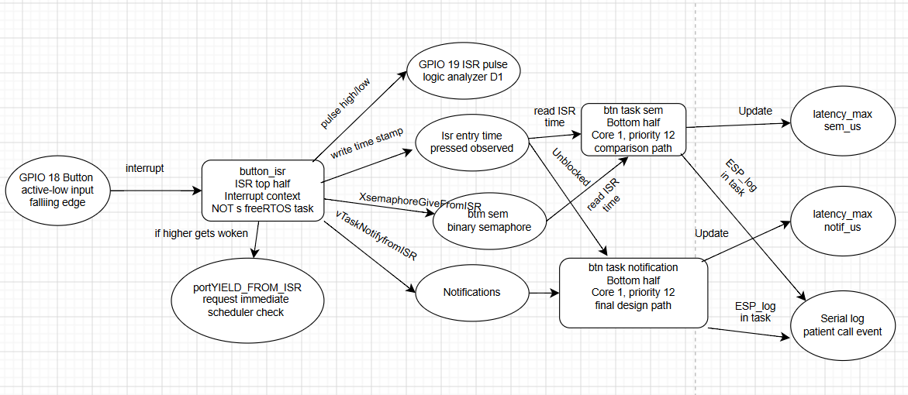
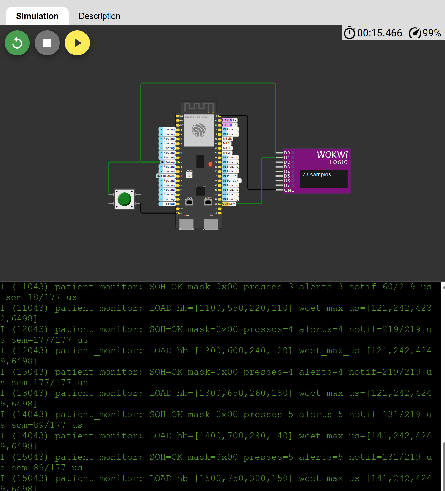
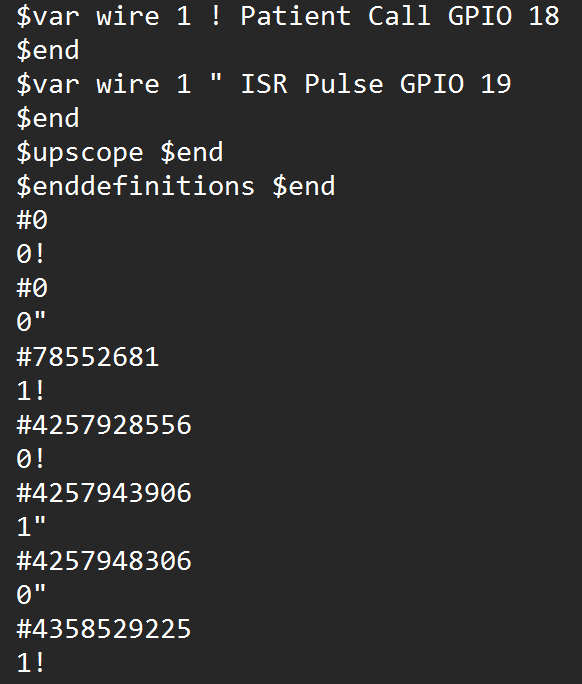

Dual-Core Design
Real-time processing runs on Core 1 while system observability runs on Core 0.
Dual-Core Real-Time Interrupt Processing and System Health Monitoring
An ESP32-S3 patient vital monitor that processes patient-call events through a bounded interrupt service routine and FreeRTOS bottom-half tasks while measuring latency and system health under periodic CPU load.
The Patient Vital Monitor demonstrates how an embedded real-time system can respond to a patient-call input while continuing to run periodic medical-monitoring tasks. A pushbutton connected to GPIO 18 represents a patient requesting assistance.
The GPIO interrupt service routine remains short and bounded. It records the interrupt time, produces a timing pulse on GPIO 19, and signals FreeRTOS bottom-half tasks using a direct task notification and a binary semaphore.
Core 1 contains the time-sensitive interrupt processing and periodic workload. Core 0 performs state-of-health reporting, heartbeat checks, latency reporting, and WCET monitoring. This separation prevents observability work from directly blocking the real-time processing path.
Real-time processing runs on Core 1 while system observability runs on Core 0.
The ISR performs minimal work and defers longer processing to FreeRTOS tasks.
Notification, semaphore, ISR, and periodic-task timing values are measured during execution.
Heartbeats and event counters are monitored to detect stalled tasks or missed patient-call events.
The demonstration shows the Patient Vital Monitor running in Wokwi. It includes the patient-call input, interrupt and bottom-half processing, system architecture, WCET evidence, state-of-health monitoring, and graceful degradation.
Patient Vital Monitor final capstone demonstration with voiceover.
Watch Video on YouTubeThe architecture separates time-sensitive patient-call processing from system observation and reporting. The patient-call button is connected to GPIO 18. A falling edge activates the interrupt service routine on Core 1.
The ISR records the event time, produces a short pulse on GPIO 19 for logic-analyzer measurement, and signals the bottom-half tasks. Longer processing is deferred outside the interrupt context.

Application 3 concurrency diagram showing the patient-call ISR, direct task notification, binary semaphore, bottom-half tasks, and periodic patient-monitoring workload.
Core 1 is reserved for the ISR, bottom-half tasks, and periodic real-time workload. Core 0 handles slower serial reporting and state-of-health monitoring. This reduces the chance that observability work will interfere with the patient-alert response path.
Four periodic patient-monitoring tasks execute on Core 1 to create a realistic processor workload. Their worst-case execution times were measured during the final integrated simulation.
| Task | Medical Function | Core | Period | Deadline | Priority | Measured WCET | Utilization |
|---|---|---|---|---|---|---|---|
| Task A | ECG sampling | 1 | 10 ms | 10 ms | 15 | 141 µs | 0.01410 |
| Task B | Arrhythmia detection | 1 | 20 ms | 20 ms | 10 | 242 µs | 0.01210 |
| Task C | Alarm dispatch | 1 | 50 ms | 50 ms | 5 | 4249 µs | 0.08498 |
| Task D | Patient logging | 1 | 100 ms | 100 ms | 2 | 6498 µs | 0.06498 |
The utilization of each periodic task is calculated using Ui = Ci / Ti, where C is the measured worst-case execution time and T is the task period.
Total measured utilization: U = 0.01410 + 0.01210 + 0.08498 + 0.06498 = 0.17616, or 17.616%.
The Rate-Monotonic sufficient utilization bound for four periodic tasks is approximately 0.7568. Since 0.17616 is below 0.7568, the measured workload satisfies the sufficient RMS utilization test.
| Component | Type | Core | Priority or Context | Trigger | Purpose |
|---|---|---|---|---|---|
| button_isr | ISR top half | 1 | Interrupt context | GPIO 18 falling edge | Records the event time, pulses GPIO 19, and signals the bottom-half tasks. |
| patient_alert | Notification bottom half | 1 | Priority 12 | Direct task notification | Processes the primary patient-call event and measures response latency. |
| sem_compare | Comparison bottom half | 1 | Priority 12 | Binary semaphore | Provides an IPC latency comparison against the direct-notification path. |
| soh_observer | Observability task | 0 | Priority 3 | One-second period | Reports heartbeats, WCET values, latency measurements, event counters, and system health. |
The Serial Monitor shows the state-of-health result, patient-call counters, task heartbeats, latency measurements, and maximum execution times during the final integrated run.

Final run showing SOH=OK, five detected patient calls, five processed alerts, IPC latency measurements, and periodic-task WCET evidence.

Logic-analyzer evidence showing the GPIO 18 patient-call transition and the corresponding GPIO 19 ISR timing pulse.
The patient-call interrupt signals two FreeRTOS bottom-half tasks. The primary path uses a direct task notification, while the comparison path uses a binary semaphore. Application 3 measured the response latency of both mechanisms under idle and loaded operating conditions.
Each operating mode used 55 patient-call trials. WITH_LOAD = 0 represents the idle condition. WITH_LOAD = 1 enables the four periodic patient-monitoring tasks on Core 1.
| Operating Mode | Trials | Notification Maximum | Semaphore Maximum | Faster Path |
|---|---|---|---|---|
| Idle — WITH_LOAD = 0 | 55 | 30 µs | 2912 µs | Direct task notification |
| Loaded — WITH_LOAD = 1 | 55 | 2884 µs | 3254 µs | Direct task notification |
The direct task notification produced the lower maximum response latency in both operating modes. Its maximum latency increased from 30 µs in the idle condition to 2884 µs under periodic processor load.
The binary semaphore path measured 2912 µs while idle and 3254 µs under load. Based on the controlled 55-trial comparison, the direct task notification was selected as the primary patient-alert mechanism.
| IPC Path | Idle Maximum | Loaded Maximum | Loaded / Idle Factor |
|---|---|---|---|
| Direct task notification | 30 µs | 2884 µs | 96.1× |
| Binary semaphore | 2912 µs | 3254 µs | 1.12× |
The notification path remained faster than the semaphore path in both modes, although its measured maximum was more sensitive to the added periodic workload. The semaphore path began with a much higher idle maximum and changed less when the workload was added.
The final integrated system was tested with five patient-call events while the periodic workload and Core 0 state-of-health observer were active.
| IPC Path | Last Measured Latency | Maximum Measured Latency | Processed Events |
|---|---|---|---|
| Direct task notification | 131 µs | 219 µs | 5 |
| Binary semaphore | 89 µs | 177 µs | 5 |
The final run confirmed that all five detected patient-call events were processed while the periodic medical workload and state-of-health monitoring remained active.
This five-event run was used to validate the integrated prototype. It was not a repeat of the original controlled 55-trial comparison because the capstone added Core 0 observability and reorganized the logging behavior. Therefore, the original Application 3 experiment remains the primary evidence for selecting the direct task notification.
The hazard analysis identifies failures that could affect patient-call processing, timing behavior, and system observability. Each hazard includes a detection method and a mitigation used in the prototype.
| Hazard | Risk | Possible Effect | Detection | Mitigation |
|---|---|---|---|---|
| Patient-call event is detected but not processed | High | A patient request may not reach the alert-processing task. | Compare the detected button-press count with the processed-alert count. | Use the direct notification as the primary path and report a state-of-health fault if the counters do not agree. |
| Interrupt service routine performs excessive work | High | Longer interrupt blocking and increased response latency may affect real-time deadlines. | GPIO 19 exposes ISR execution for logic-analyzer measurement. | Keep the ISR short and bounded and defer longer work to bottom-half tasks. |
| Observability or serial reporting interferes with real-time work | High | Patient-alert latency or periodic-task WCET may increase. | Record IPC latency, WCET values, and task heartbeats. | Pin real-time processing to Core 1 and observability reporting to Core 0. |
| Periodic patient-monitoring task stalls | High | ECG, arrhythmia, alarm, or logging activity may stop updating. | Each periodic task increments a heartbeat counter. | The state-of-health observer reports a software watchdog fault when a heartbeat stops changing. |
| IPC response latency becomes excessive | High | Processing of a patient-call event may be delayed under processor load. | Store and report the last and maximum latency for both IPC paths. | Use the direct task notification as the selected primary patient-alert path. |
| Button bounce creates repeated events | Medium | One physical press could be counted as multiple patient requests. | Monitor the timing between consecutive interrupt events. | Apply bounded debounce logic before accepting another GPIO 18 event. |
Graceful degradation means that the system does not silently continue reporting a healthy condition after a monitored function stops behaving correctly. The observability task checks patient-call counters, periodic-task heartbeats, latency measurements, and WCET evidence.
The essential patient-call interrupt and direct-notification path remain on Core 1. Core 0 separately reports system health so that slower reporting work does not directly block the real-time alert path.
| Fault Condition | How It Is Detected | Degraded Behavior | Protected Function |
|---|---|---|---|
| A periodic monitoring task stops running | Its heartbeat counter stops increasing between state-of-health checks. | Core 0 reports an unhealthy state and a nonzero fault mask instead of continuing to report SOH=OK. | Other active tasks and the patient-call interrupt path remain independently scheduled. |
| A patient-call interrupt is detected but the primary alert task does not process it | The number of detected presses becomes greater than the number of processed alerts. | The observer reports a counter mismatch as a state-of-health fault. | The ISR remains short and continues signaling the direct-notification path. |
| Observability or serial reporting becomes delayed | Expected Core 0 state-of-health messages stop appearing at their normal interval. | External visibility is reduced, but observability work remains separated from the Core 1 real-time plane. | The patient-call ISR and bottom-half processing on Core 1 remain isolated from serial reporting. |
| Measured latency or WCET increases | The stored maximum values increase in the state-of-health output. | The system continues operating while preserving the higher timing value for engineering review. | Timing degradation becomes visible instead of being hidden. |
The system separates fault detection from the essential interrupt path. A failure in one monitored periodic task does not require the ISR to perform extra work. The ISR continues to record the patient-call event and notify the primary bottom-half task while Core 0 reports the degraded condition.
This design makes the fault visible while protecting the time-sensitive path from additional logging and diagnostic workload.
This prototype demonstrates fault detection, health reporting, and core isolation. It does not automatically restart a failed task, switch to redundant hardware, or provide a certified clinical alarm. Those capabilities would be future production-level enhancements.